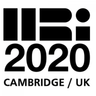
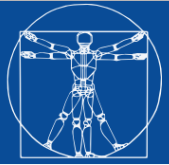
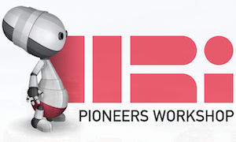
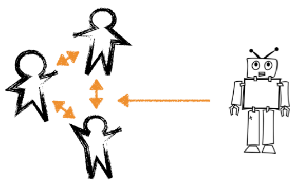

3/29/21
During the Spring 2021 quarter at UChicago, I'm teaching CMSC 20600 Introduction to Robotics, a hands-on and project based course designed to give students familiarity programming physical robots and real-world environments. Due to covid-19, this course will be conducted online using a simulated, instead of a physical, Turtlebot3 robot.
1/11/20
During the Winter 2021 quarter at UChicago, I'm teaching CMSC 20600 Introduction to Robotics, a hands-on and project based course designed to give students familiarity programming physical robots and real-world environments. Due to covid-19, this course will be conducted online using a simulated, instead of a physical, Turtlebot3 robot.

12/22/20
The final part of my PhD work titled The Influence of Robot Verbal Support on Human Team Members: Encouraging Outgroup Contributions and Suppressing Ingroup Supportive Behavior has been published in Frontiers in Psychology: Performance Science in their special issue Teamwork in Human-Machine Teaming.
10/21/20
I presented my work Robots in Groups and Teams: A Literature Review, which was done in collaboration with Brett Stoll and Malte Jung, at the virtual CSCW conference.
7/24/20
My colleagues at Cornell, Malte Jung and Brett Stoll, and I are excited that our paper "Robots in Groups and Teams: A Literature Review" has been accepted for publication at CSCW 2020.
9/29/20
The fall quarter has started at UChicago. This quarter I'm teaching CMSC 33281 Topics in Human-Robot Interaction and I'm in the process of setting up my human-robot interaction lab in JCL 379.
5/13/20
I have successfully defended my Ph.D.! The title of my dissertation is "Developing Robot Teammates that Enhance Social Dynamics and Performance in Human-Robot Teams."
4/28/20
I have accepted a position as an Assistant Professor in the Department of Computer Science at the University of Chicago starting in the fall of 2020!

4/6/20
Although the 15th Annual ACM/IEEE International Conference on Human Robot Interaction cancelled its in-person meeting, please check out my 10 minute video presentation where I present my full paper titled
"Strategies for the Inclusion of Human Members within Human-Robot Teams"

3/9/20
My paper titled Vulnerable Robots Positively Shape Human Conversational Dynamics in a Human-Robot Team was accepted to the Proceedings of the National Academy of Sciences (PNAS) and featured on the cover!
11/30/19
My paper titled ``Strategies for the Inclusion of Human Members within Human-Robot Teams'' was accepted to the 15th Annual ACM/IEEE International Conference on Human Robot Interaction in Cambridge, UK.
10/29/19
I participated in the 2019 Rising Stars in EECS Workshop hosted at the Univiersity of Illinois Urbana Champaign from October 29 to November 1, 2019.

10/06/19
I participated in the 2019 Dagstuhl Seminar on "Social Agents for Teamwork and Group Interactions" from October 6 to 11, 2019.

06/21/19
I participated in the RSS Pioneers 2019 Workshop held in tandom with the Robotics: Sience and Systems (RSS) Conference June 21-26 in Freiburg, Germany.
04/23/19
I have been accepted to participate in the RSS Pioneers 2019 Workshop to be held in tandom with the Robotics: Sience and Systems (RSS) Conference June 21-26 in Freiburg, Germany.

04/01/19
My research on examining people's responses and reactions to robots that break their trust and try to repair the trust that was broken was featured in a New Scientist article titled Robot discovers that lying about a betrayal helps to rebuild trust.
03/12/19
I presented my paper examining the response of human participants to a robot's trust violation and subsequent repair at THe 14th Annual ACM/IEEE International Conference on Human Robot Interaction in Daegu, South Korea.
02/01/19
My colleague Aditi Ramachandran and I presented our paper describing our design of the Assistive Tutor POMDP (AT-POMDP) and evaluation with 5th grade stduents at the The Thirty-Third AAAI Conference on Artificial Intelligence (AAAI-19) in Honolulu, HI, USA.
11/20/18
My paper examining the response of human participants to a robot's trust violation and subsequent repair was accepted to the 14th Annual ACM/IEEE International Conference on Human Robot Interaction in Daegu, South Korea.
10/31/18
My colleague Aditi Ramachandran and I co-authored a paper describing our design of the Assistive Tutor POMDP (AT-POMDP) and evaluation with 5th gradue stduents that was accepted to the The Thirty-Third AAAI Conference on Artificial Intelligence (AAAI-19) in Honolulu, HI, USA.
03/07/18
I presented my paper investigating the ripple effects of a robot's vulnerable behavior in a human-robot team at the 13th Annual ACM/IEEE International Conference on Human Robot Interaction in Chicago, USA.
12/07/17
My paper investigating the ripple effects of a robot's vulnerable behavior in a human-robot team was accepted to the 13th Annual ACM/IEEE International Conference on Human Robot Interaction in Chicago, USA.

03/06/17
I acted as one of the General Chairs for the HRI 2017 Pioneers Workshop in Vienna, Austria. We enjoyed a great day of engaging speakers, panelists, and student research presentations.

02/26/17
I attended the Robots in Groups and Teams workshop as a part of the 20th ACM Conference on Computer-Supported Cooperative Work and Social Computing (CSCW 2017) and submitted a workshop paper discussing ways in which a social robot could promote psychological safety within a human-robot team.
10/03/16
My research on improving human-human collaboration between children using a social robot was highlighted in an article in PC Mag titled "Taking Robots to the Next Level: Small Talk and Bear Hugs?"

08/29/16
I presented my research on 'Improving Human-Human Collaboration Between Children With a Social Robot' at RO-MAN 2016.
06/11/16
My paper on promoting collaboration between children with a social robot was accepted to RO-MAN 2016!
06/09/16
Malte Jung visited our lab in New Haven to brainstorm ideas and collaborate on projects related to how social robots can influence group dyanimcs.

06/06/16
I passed my Yale Computer Science Qualifying Exam! Thanks to Brian Scassellati, Holly Rushmeier, and Dana Angluin for serving on my qualifying committee.

03/10/16
I've been selected to be one of the General Chairs to organize the HRI Pioneers Workshop in Vienna, Austria in March, 2017!

03/07/16
I'm attending the 2015 HRI Pioneers workshop presenting my work and ideas on social robots that influence group dynamics.
03/08/16
I'm attending ICMI 2015 in Seattle, Washington presenting my work on detecting social dominance in children.